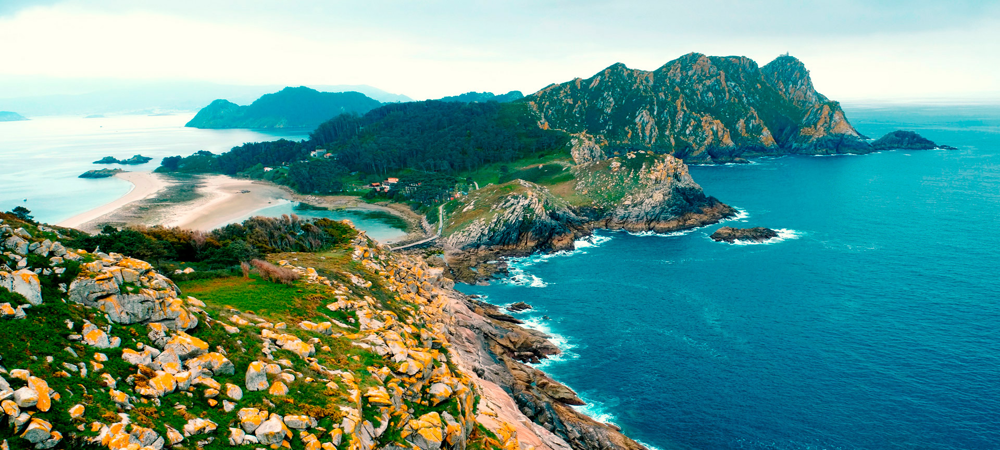

Galicia
VIDEOS
Galicia es una región llena de encanto y belleza natural, con una rica oferta de actividades culturales, turísticas y recreativas. Desde sus impresionantes paisajes costeros en las Rías Baixas y las playas de las Islas Cíes, hasta sus históricos monumentos como la Catedral de Santiago de Compostela, Galicia ofrece una experiencia única para cada visitante. Además, la región cuenta con una variada oferta gastronómica, destacándose por sus mariscos frescos, el pulpo a la gallega y el vino albariño.
Las ciudades y pueblos de Galicia reflejan su rica historia y tradiciones, con lugares como A Coruña, Vigo y Lugo, que invitan a explorar su arquitectura, museos y mercados. La vida cultural gallega es vibrante, con eventos como el Festival de Ortigueira y las fiestas de San Juan que atraen a miles de visitantes cada año.
Además, Galicia ofrece excelentes oportunidades para actividades al aire libre, como el senderismo en el Camino de Santiago, el surf en sus costas y la exploración de sus parques naturales como el Parque Nacional de las Islas Atlánticas. Ya sea en sus ciudades costeras o en su impresionante naturaleza, Galicia ofrece experiencias inolvidables para todo tipo de viajeros.